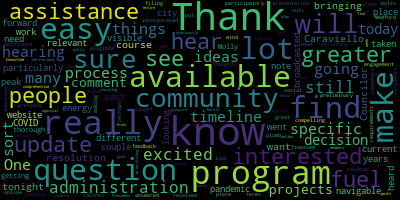

AI-generated transcript of City Council 03-08-22
English | español | português | 中国人 | kreyol ayisyen | tiếng việt | ខ្មែរ | русский | عربي | 한국인
Back to all transcripts
Heatmap of speakers
[Morell]: 10th regular meeting of the Medford City Council March 8 2022 is called to order. Mr. Clerk, please call the roll.
[Hurtubise]: Vice President Bears. the republic for which it stands, one nation, under God, indivisible, with liberty and justice for all.
[Morell]: Motions, orders, and resolutions. If the Councilors don't mind I can read this from the chair I'm actually the first resolution or. Hey, you want to come up.
[Knight]: All right, I have no problem with the reading from the chair.
[Morell]: 21-577 offered by President Burrell be it resolved that the city of Medford through its city council raised the maximum income level for clause 41 a of MGL chapter 59 section the senior tax deferral to the amount established annually by the Commissioner of Revenue as to the income limit for single seniors who are not head of household to qualify under the senior circuit program. As I mentioned last week, this is something we met with the whole about just the council has the power to set the maximum for seniors eligible for this program. It's currently at $50,000. The council has raised this a few times in recent years, and we met with the whole to discuss the idea of tying it to the senior circuit breaker amount which is about set by the Commissioner of Revenue goes up a small amount each year to stay with inflation and other metrics so that number is just over 61,000 right now. So this would tie that to this would tie our maximum to that number in perpetuity, unless we were to revisit as a council to adjust that amount so that is the resolution of any Councilors have any comments they would like to add.
[Knight]: This is a measure that we vetted properly, we've gone through a number of meetings on and it's something that I support a lot of leak. What this does is it allows senior citizens the options to defer their taxes. If in fact they find themselves in a financial situation and they make the income hardship guidelines. I think this is a policy that would make sense for those in our community especially based upon the housing shortages that we're seeing the economic circumstances that we're seeing right now. That in fact that we have a large population of senior citizens living in this community. I think this only makes sense to provide them with this type of relief and I support it will hardly move approval.
[Morell]: Thank you for the discussion on emotional Councilor Knight seconded by Vice President Bears Mr. Clerk, please actually know, we know we do need to call the role, because of this is a local option.
[Hurtubise]: Yes. Yes.
[Unidentified]: Yes.
[Hurtubise]: Yes.
[Unidentified]: Yes.
[Morell]: Yes. Yes. Yes. Yes. Yes. Yes. 22-088 offered by Councilor Knight, be it so resolved with the Medford City Council congratulate James and Maureen each on a momentous occasion of their 30th wedding anniversary.
[Knight]: Councilor Knight, Madam President, thank you very much. This was on the agenda last week and I requested to be tabled for the opportunities of my council colleagues to also speak on it because they know James and Maureen very well, as do I, and if anybody played Medford pop Warner in the late 80s and early 1990s, they'd know Jimmy Heath as the man with the best mullet in Medford. He and Maureen have been married now for 30 years and Maureen's been a active participant at the St. Francis Mothers Club for a number of years. They've raised four beautiful children here in the city of Medford. and they recently celebrated their 30th wedding anniversary. Many of us may know Jimmy from his time down at Pocanti Skating Rink, driving the Zamboni, or up at the Field of Dreams, working there as a ticket taker and a security guard. And many of us know Maureen from all her involvement through youth sports, Metro Pop Warner in particular. So with that being said, Madam President, I'd ask that my council colleagues join me in congratulating two individuals that displayed the type of community that we here in Metro believe in, James and Maureen Heath, and the momentous occasion of their 30th anniversary.
[Scarpelli]: Thank you for tonight to bring this forward I think that what a fitting couple to make sure that we acknowledge such a momentous occasion, and especially for Maureen, I think to be married to a gentleman like Jim for for 30 years that that's just amazing. That's just, just an amazing feat and she should be commended and, and obviously I joke Jim's a great guy, and does a lot for our community. And this is, these are the type of people that make Medford the great city that we live in today. Just great members, great neighbors, great community, great community members. So congratulations. Thank you.
[Morell]: Thank you, Councilor Cabrera. Councilor Cabrera.
[Caraviello]: Thank you, Madam President. Again, I just want to reiterate that my council, you know, Jimmy and Maureen Long, volunteers in the community for the youth, youth sports for many years, especially mostly with the Pop Warner. I've been privileged to go away with them on many of the cheerleading trips that we've gone on over the years and just want to wish them a congratulation on their 30th anniversary and hopefully they'll have 30 more.
[Morell]: on the motion of Councilor Knight. All those in favor. Opposed motion passes 22-089 offered by Councilor Knight, be it so resolved that the Metro City Council congratulate Kevin and Kathleen Finnegan on the momentous occasion of their 20th wedding anniversary tonight.
[Knight]: Madam President, thank you very much. Many of us know Kevin and Kathleen from Medford youth softball and Medford youth lacrosse Kevin was one of the inaugural coaches in the Medford youth lacrosse program back in the late 90s. Um, he rose up the ranks to become a past president actually, uh, just giving up the title just a few years ago. And, um, when you're looking for Kevin or Kathleen, you'll probably be able to find them at one of our fields, uh, at one of these practices, softball, lacrosse, uh, sometimes the hockey rink, even I imagine that, um, but they just celebrated the 20th anniversary of the two great people that have dedicated a lot of their time, energy, commitment to this community. Um, especially in the realm of, uh, youth sports and, and bringing our programs together as volunteers and boards of directors and coaches and the like. So with that being said, Madam President, I'd like to first recognize Kevin Finnegan, who was a senior when I was a freshman in high school, who was very good to me growing up, someone who I've been able to develop a friendship with over the years, and someone I've been able to work with on a number of these initiatives, especially the Medford Lacrosse Program. He's someone that's really put his money where his mouth is. He's someone that's always been there to show that his actions speak louder than his words. A man of not much to say, but a lot to do. And he's someone that I admire, and he's a friend of mine. And I certainly wish him and his wife a great anniversary. 20 years is a great, great, great achievement that I congratulate them both. So with that being said, I ask my council colleagues to join me in supporting them this evening in their celebration and also recognizing the work that they do in this community to make sure that Medford is a place where we can all thrive.
[Scarpelli]: Again, thank you, Councilman for bringing this forward. I think between the Heath's and the Finnegan's, I think that there's a common bond here. Two couples have been married 20 plus years and also members of our community that are great examples of what a backbone of family people are all about. a good example of how to give back to the community and still maintain such a strong marriage and families. So I congratulate them and wish them happy 20. Thank you.
[Morell]: Thank you, Councilor Scarpello. Any further discussion? On the motion of Councilor Knight, seconded by... Second. Vice President Bears, all those in favor? Aye. All those opposed? The motion passes. Congratulations to the Peace and the Senegans. 22-090 offered by Councilor Caraviello. Be it resolved that the City Council reappoint City Messenger Lawrence Leopore for a term expiring on the first Monday of January 2024. Councilor Caraviello.
[Caraviello]: Thank you, Madam President. I think there's something that we've, a little bit of housekeeping, I think we forgot to do when we all got inaugurated. Larry's been here 28 years, and I think it's time we reappointed him for another couple more years, bring him up to 30. Larry, are you going to accept the guest? Larry's been here a long time, a lot longer than any of us have been here, and well-deserved. He does a good job every week. Everyone stays to our house or anything. So motion to reappoint Larry. Madam President, if I could also amend this, sort of falls under our thing, but if you and the clerk yourself and the clerk could sit down with the mayor and talk about maybe an increase in pay for the young man who does our TV things every year. He's working two to three nights a week here and well underpaid for what he does. So under your guidance and between you and the clerk, you talk to the mayor about seeing about increasing his pay would be greatly appreciated. As a big paper.
[Hurtubise]: Thank you.
[Scarpelli]: Thank you again. Thanks, Councilor Caraviello. This is something that shouldn't have gone unnoticed. But when you have someone like Larry, he's been the the common denominator for politics in this hallowed hall, and we appreciate everything he does. I know that I know he had a long street going. before that ice storm left a few Fridays ago. I was pretty disappointed that he didn't make the trek out in two inches of ice and had to deliver on Saturday. If I could just ask if he could maybe bring a treat for now on so Gabby doesn't rip the couch apart when he drops off our papers. But again, I second the motion. Thank you, Larry and move approval. Council Scarpelli, would that be something that he could put in his expense report that you know what, forget it. I'm sorry. I just, you know, as a new Councilor I wanted to.
[Tseng]: talk about how much Larry means to me. I mean, Larry's been super helpful with my deliveries, especially given my kind of wacky schedule. He's been able to work around that and I'm very, very thankful for that. And I'm also super thankful that he's been such a welcoming person in the city council chambers since the first day that I got to my seat. So I'm very excited about this motion.
[Knight]: Thank you very much, Larry, congratulations and thank you for all you do. When you sit down and you think about 20 years of service, and then you look behind this rail and you look at this body combined we have 31 years behind this real combined 31 years of service Larry has 28 by himself. The institutional knowledge that this man possesses is amazing. He's seen it all. He's been at every single city council meeting for 28 years. I would have found you not guilty, Larry. I would have gave you parole a long time ago, literally. But the institutional knowledge that you possess and the friendship that you've shown me over the years has been something that's tremendous. Larry's a man of few words. But if you ask him a question, he'll certainly give you an answer and he's been here and seen it all. He's a great resource to all of us and he's something that we need, especially when you see the transition through City Hall and the department heads and the like. You know, we need someone that has an institutional knowledge that can guide us in the right direction, point us in the right way. And Larry's that person. You know, the City Messenger's job is to deliver the papers and to make sure that we're informed with the provided with the materials that are necessary for us to prepare for the meeting but Larry does much more than that, and his title messenger does not necessarily reflect all that he does for this body. So Larry thank you very much I support this wholeheartedly. We've been a great friend for a long time and I wouldn't want anybody else sitting in that chair for you.
[Bears]: Thank you, Madam President, and my comments, very similar to Councilor Knights, which are just that if you have a question about what's happened in this city and you wanna compare something that's happening now to something that's happened basically the entire time we've had this charter, Larry's the person to talk to, and I'm grateful to have a lot of great conversations after our meetings with Larry. So I'm very supportive of this motion.
[Morell]: Thank you, Vice President Harris. Any further discussion? And if I just go through the chair, I want to thank you, Larry, and I appreciate you, you know, the consistency and wanting to keep doing this job. I thank you for letting me boot you out of your chair for a few months during the configuration was a little different here in the earlier days of COVID. And it's always a delight when we cross paths, when you're delivering the papers and, you know, my dog is also losing her mind. So on the motion of, On the motion of Councilor Caraviello, seconded by Councilor Scarpelli. Actually, no, we have a B paper first. You can take the B paper first. So we're gonna take the B paper first. Do you have the language for that B paper?
[Hurtubise]: Okay.
[Morell]: So for the B paper from Councilor Caraviello for the president of the council and the clerk to sit down with the mayor to see a bill face potential salary increase for Shane, who helps to manage our video digital presence each meeting. Please. Seconded by Vice President Bears. All those in favor? All those opposed? B paper passes. On the main paper offered by Councilor Caraviello, seconded by Councilor Scarpelli. I've lost everyone's second. Mr. Clerk, please call the roll when you're ready. Yes.
[Hurtubise]: Yes. Yes. Yes. Yes. Yes. Yes. Yes. Seven affirmative zero and the negative the motion passes. Congratulations Larry.
[Morell]: Okay, come on up first. Be sworn in.
[Hurtubise]: All the duties incumbent upon me as Medford City Messenger according to the best of my ability and understanding agreeable to the rules and regulations of the Constitution. The laws of this Commonwealth Thank you, Eric.
[Morell]: All right, you ready? 22-092, offered by Councilor Caraviello. Be it so resolved that the administration start providing information to our residents on where they're able to get assistance with their heat and energy costs, not just fuel oil assistance, but assistance with both gas and electric heat related costs. Be it further resolved that we obtain a report on the cost of the aggregate electric contract compared to national grid. Councilor Caraviello.
[Caraviello]: Thank you, Madam President. Anybody that, owns a home or has to pay for the heat in the house, I think has seen a giant increase. And I know in the past, we've had some assistance with fuel oil, but I don't know if anybody has gotten the gas bill lately, gas bill is through the roof, electric bill is through the roof. I don't know, I know in the past we've had some programs there for fuel assistance. It didn't include gas and electric heat. Again, maybe Alicia Hunt, she's the Energy and Environment Director, maybe she can provide us with a report if there are any funds available for the residents. I don't know if that's covered under, maybe some of that's covered under the APA agreement, but like I say, anybody that owns a house or apartment that pays rent and pays a giant increase no matter what your heat yield is. Any help to the residents can be greatly appreciated.
[Morell]: Thank you, Councilor Favella. Any further, Councilor Collins.
[Collins]: Thank you. And I want to thank Councilor Caraviello for bringing this up tonight. I was interested in this resolution because, you know, over the course of particularly in the past couple of years with the pandemic, from my work in the community, I've heard about different sorts of energy and fuel assistance programs. So I went on the city website to see, you know, what's current, what's available, what's easy to find, and it's not easy to find. So if those fuel assistance programs are available, we should make it really easy for people to find them because as you note, more and more people are in greater and greater need of them. We should make it easy, we should make it navigable, make it visible. So I'm really interested to hear that update from the administration, not just on what's available, but also on some of the programs that were really broadcasted during the peak of COVID, what's still relevant, and if not, what's taken that place. So looking forward to getting this update from the administration. Thank you.
[Morell]: Thank you, Councilor Collins. Any further discussion? And just from the chair, I do know there is at least the state program LIHEAP. My father worked in that area for a very long time. That is one program, L-I-H-E-A-P. But of course, as Councilor Cohn said, as you said, these are things the president should be able to find in one easy space. And especially if there are additional programs beyond the state level programs.
[Caraviello]: Madam President, again, the other part is, we have that agreement with Good Energy. And I'd like to know where we are with how those costs have gone compared to what national grid is. Because I know there are people that have been getting calls from other companies that are cheaper than what we're paying. So I'd like to know where we stand with that.
[Morell]: Absolutely. Any further discussion? On the motion of Councilor Caraviello, seconded by Councilor Knight. All those in favor? All those opposed? Motion passes. 22-093 offered by Councilor Caraviello. Be it resolved that the Medford City Council send its deepest and sincere condolences to the family of Sylvia Bolden on her passing at 99 years old. Mrs. Bolden was a 98 year resident of Medford. Her presence in our community will be missed. Councilor Caraviello.
[Caraviello]: Thank you, Madam President. Again, Mrs. Bolden, fixture in the community. 98 years here, I mean, I mean, I mean people get to say that they lived here for 98 years, and people don't know the Baldwin family, her daughter is very instrumental with the hoops, hoops a dream by our project that Councilor Scarpelli is involved with. So, if we could just send the condolences to her family on her passing.
[Scarpelli]: always giving back and definitely be missed and send our condolences to the Bolden family. Thank you.
[Morell]: Thank you for the discussion. On the motion of Councilor Carpio second by second Councilor Scarpelli. All those in favor. Aye. Please rise for a moment of silence. petitions, presentations, and similar papers, 22-096, petition for a common vehicle license by James Pham, 27 Westgate Drive, Brockman, Mass, go to 301 for Fudge Town, 74110, Mystic Valley Parkway, Medford, Mass, 02155. On file business certificate number 117, building department, fire department, police, traffic impact, health department, letter of compliance, state tax ID, workman's compensation, petition, and creditor. chair of licensing licensing. Mr. Scarpelli.
[Scarpelli]: Thank you, Madam President. If the petition to come on up. Welcome, thank you for being here. It looks like, Madam President, all of Mr. Pham's paperwork is in order. And the hours of operation, Mr. Pham, do you? Yeah, from 10.30 to 10 every day. 10.30 to 10 Monday through Sunday?
[Hurtubise]: Monday through Sunday, yes.
[Scarpelli]: All right, they do delivery as well, is it? We don't do it now. Okay, good. All right, how many employees will be working there? Right now it's four. Four, okay. I see everything in order. I know my fellow councilors might have a few questions, but I move approval.
[Morell]: Any further discussion? On the motion of Councilor Scarpelli, seconded by Vice President Bears to approve the paper. All those in favor? Aye. All those opposed?
[Hurtubise]: Good luck. Motion passes, congratulations. Good luck.
[Scarpelli]: See you in a few days.
[Morell]: 22-097 petition for common Victoria license by Gopakumar Menon, 89 Spring Street, Apartment 5, Watertown, Mass, 02472 for Crumble Cookies, 23 Revere Beach Parkway, Medford, Mass, 02155. On file, business certificate 210, building department, fire department, police, traffic impact, health department, letter of compliance, state tax ID, workman's compensation, petition, and treasurer, Councilor Scarpelli.
[Scarpelli]: Reviewed all the paperwork. I know that we have, it looks like everything is in order. Mr. Menon, is it?
[Tseng]: Yes, correct.
[Scarpelli]: Good evening. I know we talked a little bit before the meeting.
[Tseng]: Yes.
[Scarpelli]: He, you know, unfortunately, the only sad part about this is it's crumbled cookie. So, but again, we, again, we see everything in order. What are the hours of operations?
[Hurtubise]: So, 8 a.m.
[Morell]: to 10 p.m., Monday through Thursday until midnight, Friday, Saturday, off on Sundays.
[Scarpelli]: Okay, I know that it's a very popular place and it will be a well addition, an added addition to our community so if my colleagues don't have any questions I move approval tonight.
[Knight]: Did you say till 12pm. Yes. Okay, so, so if we approve this from this evening you'd be able to operate from 7am to 11pm, anything after 11pm requiring extended hours permit, there needs to be approved with this console. So you need to fill out another separate application, and be able for us again for us to deliberate that issue. issue speaking as one member of this body. But if we were to approve this evening and then Friday night, you're open till midnight, that'd be a problem. So we just want to make you aware of that.
[Scarpelli]: Okay. So what would I have to do? I would do is see the clerk tomorrow, file for that. And then you come back in front of the body. Usually we approve it and maybe a 30 day review, 90 day review. And if there are no issues, we continue. I don't see it being a problem. Okay. Okay. All right. So I move approval to 10 o'clock, 11 o'clock, excuse me, 11 o'clock.
[Morell]: Any further discussion? On the motion of Councilor Scarpelli to approve the petition with the hours being till 11 p.m. seconded by Councilor Knight. All those in favor? All those opposed? Motion passes. Congratulations. Thank you.
[Scarpelli]: He didn't mean that.
[Morell]: Motion by Councilor, Vice-President Bears to take the three papers under suspension. Second by Councilor Svang. All those in favor? All those opposed? Motion passes. Great. I do. Thank you. Under suspension, 22-098, congratulations to the Chamber of Commerce Citizens of the Year for the years of 2020, 2021, and 2022. Offered by Councilor Caraviello, oh, I see.
[Caraviello]: Thank you, Madam President.
[Morell]: I can read the whole paper. Sorry. Over to Councilor Caraviello. These are resolved at the City Council. I commend and congratulate the Medford Chamber of Commerce on the selection of the 2020, 2021, and 2022 Citizens of the Year. Medford's first responders, Sam Carabelsi and Vinnie Fertura.
[Caraviello]: Thank you, Madam President. Thank you to the Chamber of Commerce that has their usual banquet for the citizen of the year. Due to the pandemic, they haven't had it for the last two years. So they are planning to have it again this year in great selections for the citizens of the year. I don't know if anybody knows how they get elected, but it's sent out to the community and people send in nominations to the chamber for people who who they feel are worthy and they get voted on by the past citizens. So that's something about Medford first responders was their first choice. And I think everybody knows what a great job they did during the pandemic. Sam Terrabelsi from Lawrence Memorial and Hallmark Health. Sam, you couldn't ask for a better person than Sam. Sam has kept the hospital prevalent in this community for many years. Without Sam, there'd be no Lawrence Memorial or anything to do with it. And Sam is there. He's a member of the Chamber of Commerce. Many people think Sam even lives in Bedford, because he's here so much, but Sam's a great guy. Benny Futura. Yeah. Vinny Futura, member of the Rotary. If there isn't anything anybody needs, they don't run to Vinny for, and Vinny's the first guy to help out anybody on the community. Good family. Again, all well-deserved, and I just want to congratulate all three of them.
[Morell]: Thank you, Councilor Caraviello. Any further discussion? On the motion of Councilor Caraviello, seconded by Councilor Knight. All those in favor? Aye. All those opposed? The motion passes. 22-099 offered under suspension by Councilor Knight, be it so resolved that the city council extend its deep and sincere condolences on the family of trooper tomorrow Gucci and her extended family at the Massachusetts State Police Wellington barracks on her recent passing Councilor Knight, Madam President, thank you very much if any of us.
[Knight]: have been paying attention to the recent ongoings and current events here in the community. Just recently, one of our state troopers from the Wellington Barracks was critically injured in a motor vehicle accident on Route 93. Her services are actually being held this evening up at, I believe, St. Anthony's Church in Urbana. But Trupa Bucci was a 34-year-old state trooper who was relatively new on the job. She had a career prior life working over at Encore Casino as a security specialist over there with a number of Metro residents that I know very well, including Arthur Simmons and Jason Wong, for example, who called me to express their concern over the circumstances surrounding this terrible accident. My life was taken well too short due to a preventable motor vehicle accident. I think it's all too common that we see the way that people drive on the roadways. The condition of our roads, the circumstances that led to this event show that a lot of it has to do less with driver training and less with driver responsibility than it does with actual design. And we sat here last week, we talked about Vision Zero. We talked about using design to make our roads safer because sometimes there's just nothing we can do to prevent an accident. And when you hear about the circumstances surrounding this incident, I think it's safe to say that the truck driver was not necessarily at fault, and this was an accident that just occurred. It was really something that was almost preventable, unpreventable. But to lose a trooper at age 34 years, with so much potential and so much life ahead of her. It's something that's very sad. She suited up every day to make sure that this community was safe. She was stationed right here in our city, and she responded to the calls that we all make. And I think it's very important for us to recognize the sacrifices that she's made sacrifices that her family made through her service. So with that being said, I asked my council colleagues for this resolution, and I'm sending family of tomorrow G, not only her personal family but also extended family at the Masters of State barrack state his back to.
[Bears]: Thank you, Madam President, thank you Councilor Knight for bringing this forward. He took the word right in my mouth, I was going to mention the circumstances here and you know vision zero and design and I think. Too often we hear tragic and unfortunate when it comes to something like this, when it really should be, how can we change the conditions of our roads to make sure that this doesn't happen? And that's a personal issue to me. So thank you for bringing this forward.
[Morell]: Thank you, Vice President Bears. Any further discussion? On the motion of Councilor Nice, seconded by Councilor Caraviello. All those in favor? All those opposed? The motion passes. Please rise for a moment of silence. 22.0 100 offered under suspension my Councilor Knight, it's a result of the Medford City Council extended steep and sincere condolences, the family of William Boyd on his recent passing Councilor Knight.
[Knight]: Now Madam President, thank you very much and I do believe the councilor Scarpelli is a co sponsor of this resolution. Just recently, Mr. Boyd passed away. someone who lived in the city of Medford for, geez, got to be 70 years, was a military veteran and just an all-around good person. His son, Buzzer, and I are very close friends. His son, Billy, was just elected not too long ago to the New Hampshire State Legislature, and the city council had honored him on this achievement as a high school graduate, getting elected to the New Hampshire State Legislature. So as you can tell, he's a proud father who raised a good family of public servants. He was, as I said, was a veteran, as was his son, Bowser, after him. And recently he passed away. He will be sadly missed. Mr. Boyd was quite a character. I fondly remember a conversation that I had with him when the tree in front of his house was removed and he called and wanted the tree replaced. So I reached out to forestry department and I asked that they replace a tree in front of the Boyd's house. And they went down and they replaced the tree. And Mr. Boyd called me. And he said, what the hell is this? And if you saw what this was, it was Charlie Brown's Christmas tree. It was the funniest looking little tree I'd ever see. It was maybe eight inches tall and didn't have a leave on it. And me and Mr. Boyd just laughed and laughed and laughed. It was one of the funniest things that this happened to me in government service. You know, when you call and you ask them to plant a tree and the gentleman says, the trees come in and we're all excited about the tree coming and then There it is, you know what I mean? It's a little twig sticking out of the ground. He didn't know whether it was supposed to water it or pull it out. It was just, it was a really funny circumstance. And he and I laughed about it. And his son and I laughed about it as well. But just a great person. I take it from us, well, far too soon. Many of us that live in the Salem Street area would see him driving around in his beautiful Corvette. And that's when we know that Mr. Boyd was out and about. But with that being said, I'd just like to ask my council colleagues to extend a note of condolence to the family for a United States military veteran who's served our country and served this community so well. He's raised two civic-minded children in Buzzard Valley. One's a state rep, the other one's a veterans advocate up at Post 45, and they've both done great things for this community as well as their father. So with that being said, I'd ask my council colleagues to join me in this resolution.
[Morell]: Thank you.
[Scarpelli]: A sad day, Mr. Boyd was a true hero, a veteran, someone who loved Medford. Mr. and Mrs. Boyd had two children and they raised them to love the city of Medford and love their country. And that's one thing, if you know Buzzer and you know Billy, that's what they're all about. Billy and I were classmates at Medford High School in class of 87 and nobody could, Nobody could. Nobody could tell Billy he could bring his trumpet to any event and play the fight song. And that's something that Mr. Boyd instilled in his children. And he'll be sadly missed. I know that he's gone through a tough time the last couple of years, but he was definitely a fighter and appreciate everything he's done for our community and our country. And we send our condolences to the Boyd brothers. wish them well, it's difficult times.
[Morell]: Thank you. Thank you. Any further discussion on the motion of Councilor Knight and Councilor Scarpelli all those in favor. All those opposed. Motion passes please rise for a moment of silence. On the motion of Vice President Bears to revert to regular order of business, seconded by Councilor Tseng. All those in favor? All those opposed? Motion passes. Communications from the Mayor 22-094, March 3rd, 2022. To the Honorable President and members of the Medford City Council regarding the American Rescue Plan Act ARPA, dear President Morell and members of the City Council, I respectfully request that your Honorable body allocate time for a presentation on a topic of the American Rescue Plan Act ARPA to allow our Federal Funds Manager, Molly Kivy, the time to present to the Council. Thank you for your kind attention to this matter. Sincerely, Breanna Lungo-Koehn, Mayor. I believe it's just a, it's a presentation, correct? Yes, it's a presentation. It's getting nods from the USF and Federal Funds Manager. Molly, if you'd like to go to the podium.
[Molly Kivi]: Thank you for this time, Madam President, and hello, city councilors. At this time, I will share my screen.
[Morell]: Yeah, if you could just share your name and address for the record as well. City Hall is fine. City Hall address.
[Molly Kivi]: Just name and address for the record. My name is Molly Kippy, and my address is... You can give your City Hall address. Oh. You can give your City Hall address. It doesn't... Oh, 308.
[Unidentified]: I think that's true, yeah.
[Hurtubise]: Yeah, okay.
[Unidentified]: Yes, okay.
[Molly Kivi]: So today I will be presenting on Medford's American Rescue Plan Act today, also known as ARPA. I am here to answer any questions at the end of this presentation. Firstly, I will be defining what ARPA is, the spirit behind it, eligibility and ineligible uses, and framing project narratives. I will then share the community engagement plan for the next year, which is a defining piece of the strategic spending plan. ARPA is a COVID relief bill, a bill to help remedy the harm from the last two years. The spirit of ARPA is to help fight the pandemic and support municipalities, individuals, families and businesses struggling with the pandemic, with the public health and negative economic impacts. Maintain vital public services among decline in revenue and build a strong, resilient and equitable recovery by making investments that support long-term growth and opportunity. The federal government released 1.9 trillion in funds to stimulate the economy back in March of 2021. These funds are making their way to individuals, families, municipalities, and businesses in a number of avenues. For example, Medford has been earmarked to receive 1.2 million for state ARPA-funded projects in addition to direct federal funding. Today, we'll be focusing on coronavirus local fiscal recovery dollars, or $48 million. ARPA was signed into law in March of 2021. The first set of guidance was released in May 2021. The final rule was issued this past January in 2022. Just last week, the Department of the Treasury released updates on compliance and program guidance. The final rule is 500 pages. Cities and administrators are tasked with building programs as changing guidance emerges and additional allocations received. Medford is taking careful and thorough approach when creating plans for funds as to avoid duplication of efforts and funding sources. For example, the state of Massachusetts still has $2 billion in state relief funds to allocate to cities and towns this year. 2026 is the spending deadline. This creates a fiscal cliff for any social programs, staffing, projects funded by ARPA. The deadline also means that when budgeting, projecting up to 2026 is important. We are mindful that these funds have an expiration date. There are four very broad categories in ARPA, responding to the public health emergency being the largest. This is a non-exhausted list of prohibited uses. Funds cannot be used to offset a tax cut, pensions, loans, settlements, cash reserves, or stabilization funds. This section will go over a non-exhausted list of eligible uses broken out into, in the four sections of the final rule. This first section shows outlined programs as described by the Treasury to remedy the harm caused to impacted populations. This includes public health, support staff, direct aid to the business community, impacted business community, and direct aid to individuals. This second section shows outlined programs as described by the Department of Treasury to remedy disproportionately impacted populations. This includes educational disparities like learning loss, investments in neighborhoods, community health, and long-term financial security programs. This slide shows compliance isn't necessarily about the program idea. It is first and foremost about identifying the public health or economic impact caused or exacerbated by the pandemic. Then after identifying the harm, identifying the individual, population, or business as an impacted group or disproportionately impacted group, then using a program from the Treasury's guidance to remedy that harm. Knowing whether a group is impacted or disproportionately impacted either narrows or expands the programs available. This second section is revenue replacement. Revenue replacement is based on a formula provided by the treasury to estimate how much the tax base shrunk during the public health crisis. These funds can be used for anything categorized as a government service, like administration, education, and public safety. Premium pay is the third section. Premium pay, also known as low-income essential worker pay, these funds are designated as an economic remedy for people who do not earn a living wage, a population who were specifically harmed by the public health crisis. Fortunately, the state is using 500 million of its ARPA funds to fund low income essential employee pay. This takes away the administrative burden on municipalities and is best fit which is best fit for the state to handle because cities and towns do not have access to tax data needed to identify these individuals. I would like to take this opportunity to announce that the state is issuing $500 checks starting this March. For example, an individual making $38,000 will receive a check and a family of four making $78,000 or less will be receiving a check. To learn more, please follow the link on the slide. And slides will be posted on medford.org. The fourth and final section is infrastructure, particularly water, sewer, and broadband. The federal government believes that communities having access to clean water and information are essential to healthy communities. Funds can be used for construction, subsidies, grants, and classes. Community engagement is an important component to the information gathering step for the strategic ARPA implementation. The purpose is to develop base knowledge for all stakeholders, try to engage all populations, explore community priorities, and share data with all stakeholders. Activities will focus on sharing where emergency spending is going and creating accessible activities for residents to share their values. effort to bring equity to this process, Medford will focus on creating community relationships as to reach as many Medford residents as possible, offer translated materials, de-technicalized language, and share information through a number of sources. Types of communication that will be used on the website will be The Medford government website Medford community media city hall department email list newsletters public spaces, the phone social media and in person interactions. Specific activities for community engagement include community survey community meetings and an outreach series. Medford plans on releasing a multilingual survey this spring, conduct an outreach series over the summer, close the survey in the fall, and have analysis out in the winter. The project selection process starting in 2023. What has been spent and how will funding be allocated? Currently COVID testing, specifically rapid tests are available to vulnerable populations distributed at West Medford Community Center, the Senior Center and Medford Housing Authority. COVID mitigation, like computers for work from home and COVID safe water filling stations for students. Next, funding has been spent on community outreach workers. Also on wastewater construction at James, Swamp, Goldsmith and Main Street. And finally, the lead rebate program. Four elements are crucial when planning spending objectives. One, public feedback and values. Two, emergency needs. Three, project readiness. And four, understanding previous priorities identified in earlier processes. For example, priorities identified in the Capital Improvement Report, Medford Comprehensive Plan, and the Medford Climate Report. All of these and more can be found at medford.org. This is a visualization on how feedback from the public will be used. So feedback mixed with emergency needs, department priorities, and previous plans will all be mixed together. Then we'll check for project readiness and it's ready, then that will be funded. Finally, updates and ways to get involved can be found at medford.org. In conclusion, here are some projects that have been shared by local and similar cities to Medford. The money has not started flowing yet for many of these projects. Setting up these programs are taking municipalities a lot of time as we figure out capacity issues, operational procedures, and learn updated treasury guidance. These projects exemplify a mix between direct aid, government service improvements, and business supports. I will stop sharing my screen now, but I am available for questions.
[Caraviello]: Thank you, Madam Mayor. Thank you for the presentation. A couple of questions. Yes. So I saw something about pay to go projects. What would be considered a pay to go project?
[Molly Kivi]: Pay to go project. That means that a loan has not been taken out to fund that project. So it's a project that we are literally paying for it as it's being- Can you give me an example of something that you would be considering? Construction.
[Caraviello]: Construction of?
[Molly Kivi]: So currently there is a wastewater project that is happening at Swamp, Goldsmith and Main, and that is a pay go project.
[Caraviello]: Okay. And the essential workers under the premium pay program, how are we going to identify those workers, I mean, do you have to live in Medford or just work in Medford?
[Molly Kivi]: We are still looking over the guidance on essential employee pay, essential worker pay.
[Caraviello]: Now, does that cover private business employees also? Private business, I mean, you know, like if you work the stop and shop, you know, is that considered?
[Molly Kivi]: It does include private sector.
[Caraviello]: And do those people that work in the private sector have to live in Medford to get that funding?
[Molly Kivi]: So if it's Medford funding, yes.
[Caraviello]: If it's a Medford company, but what if they don't live in Medford? Are they eligible? Oh, I still need to- Are they eligible for the funds or is it just regulated to people that work in Medford businesses that live in Medford?
[Molly Kivi]: I will definitely consult with our consultants on that and check out the guidance.
[Bears]: Thank you. Thanks for the presentation, Molly. You know, we did, I just wanted to see. And I don't know if this is similar to the presentation you might be giving tomorrow, but we spent 8.6 million of the ARPA money on revenue recovery in fiscal 22. And I was just wondering if I just didn't see it in the list of things that we had spent money on. And so is that a non-exhaustive list of things that money had been spent on, or is it just that that one piece, that revenue recovery piece wasn't included in the list?
[Nina Nazarian]: Yeah, I think that's a relatively fair statement. It's just a non-exhaustive list because the revenue replacement aspect just wasn't the same scale as the other items that were being presented, but certainly the 8.6.
[Bears]: Yeah, great. I just, you know, I think, I think people are going to be surprised when they see, looking at the revenue replacement formula from the final rule, just how much revenue we lost and just how much of the 48 million is probably going to end up in a revenue replacement fund. And I think that that might be a good thing to let people know, you know, we see 48 million people think all our problems are solved. If we end up spending 32 of a million of that on revenue replacement, then the pool for the PAYGO programs is much smaller. So that's just my one piece of feedback, but thank you for the presentation.
[Scarpelli]: Thank you, Council President and thank you for being here tonight. Now, the question I have is, I work in municipality, and I work as the acting director of recreation. And one thing we're seeing is we're seeing a huge gap with parents going back to work and being home that had young children that had coverage. Now that moving out and you have both parents with two family house that children left without assistance after school and something that we're working on in my community that I'm working in, but something that I know that the Director of Recreation, Kevin, is working right now with one of the phone calls, a bunch of phone calls we've received about the same issue, which is the voucher, the families that have voucher programs are being accepted into afterschool programs. And then you have the families that have funding to pay the expensive fees for an afterschool program. And what's left now is a huge gap of families that really never needed after school care. And we're seeing a huge disparity now. And I'll be working closely with with the director and working with him and sharing some of our ideas. I know that in in my community where I'm working, we're actually taking over an afterschool program for low-income middle school boys and girls, and we're hoping to use the ARPA money to assist us with those gaps. So the question I have, would that be something that the parents and the director could come to the body and ask for assistance? Does that fall into the category here in Medford? Is that something that we're looking at as you see these concerns that we're seeing and these gaps now?
[Molly Kivi]: It seems like that that is like you identified a harm that that was caused by the pandemic so I would say, definitely something to bring.
[Scarpelli]: Okay, that's great. That's great to you so it's going to be this I appreciate the presentation because you really shared a lot here and it's something that I think as we move on to the community. It's something they can they can use in different departments can use to assist to fill in those gaps. And I know I'll be bothering the chief of staff in the mayor's office and asking to assist in any way I can to help with that gap. So I appreciate all your hard work. And I think this is I know that Council B has brought up a very, very good point where it's the hidden, you know, everybody thinks that we're getting every penny is going to go to everything we need is going to fix everything. But we should really understand where that money's coming from where it's already earmarked. So But thank you again for all your hard work. This is great.
[Molly Kivi]: I will just mention as a caveat with any of these programs, there will be, we need to set like income eligibility requirements and there is data that needs to be reported to the Department of Treasury to keep it all compliant. So it isn't always straightforward, but that is definitely like a harm or an impact that can be remedied through these funds.
[Scarpelli]: And I'm sure that's easy to do. Thank you.
[Collins]: Thank you. And thank you, Molly, for that very thorough presentation. I'm excited to hear that the slides will be available online because there's a lot to plumb through and I'm sure I'll be revisiting it to get caught up on all the nuts and bolts. You answered a lot of the questions that I had in terms of what specific programs are and aren't eligible. One of the things that's on my mind, which I'm sure is one of the many things that isn't yet set in stone is kind of a more specific timeline for the community engagement piece. Some of the questions that I've been hearing from residents are, you know, it's so great that this is going to be a participatory process, but what is it going to look like and how will I know that my feedback is being, you know, really incorporated, not just received and then put in a filing cabinet somewhere. So I'm sure the timeline for making those decisions is still being finessed, but do you have any sort of preliminary thoughts about, you know, if there's lots of ideas that are compelling and meet the requirements and perhaps are mentioned in a previous program like the social justice roadmap or the Medford comprehensive plan, what the what the decision process will be like for prioritizing among many good ideas. And if that's not a today question, that's also fine.
[Molly Kivi]: The timeline for community input will be the spring. Then there'll be a community outreach series in the summer. That data will then be collected, analyzed, and released in the winter. As that, as we move through this year, the administration will be looking at what like what's what's needed emergency wise and those projects and that funding will be what will be public facing and announced.
[Tseng]: I had quite similar questions to my colleagues on that point. You mentioned that it would be released, will it be posted on the city website, on the ARPA website, perhaps?
[Molly Kivi]: Yes.
[Tseng]: Okay, awesome.
[Molly Kivi]: Currently, we have, the slides will be up this week, and there is a community engagement timeline, and there's some background information on ARPA.
[Tseng]: Great. Well, you mentioned the administration will go through and see what's an emergency, what's not, what projects are ready to go. Will the administration perhaps be open to explaining a little bit when the time comes, like why certain projects are chosen. I think that it goes to kind of Councilor Collins's point where like some residents might feel, you know, this project seems ready to go. Why wasn't it chosen? Would the administration have the capacity to kind of explain to citizens on the website?
[Nina Nazarian]: That's definitely a fantastic question. I mean, I'm trying to think through how that might unfold and trying to think through scenarios, you know, you know, obviously from a time standpoint, you know, Q amp a might be able to be developed on. circumstances that's more generic, but I don't wanna, I don't wanna, I'm not prepared to commit because frankly, I'm still learning about all the different avenues and aspects and types of requests that might come in. It would be easy to say, well, this item was not eligible and therefore it could not be funded. It would be relatively easy to develop a Q and A going through, depending upon the volume we received, depending upon, you know, the number of inquiries we received, you know, it's just it may be difficult, maybe burdensome for an already strapped process. But, you know, I think it's really great input. It's something we should look at that just I'm not prepared to answer the question because we're in uncharted territory, to be honest.
[Tseng]: I understand. Um, and I guess my last point was, um, you talked a lot about, you know, like a community engagement and also a lot about, um, looking at what other communities are doing. Have we kind of looked at what other communities are doing and how other communities in the past have done with regards to like participatory budgeting when it comes to engaging the community in the process, perhaps? I know you had a list of like a probably the most specific list I've seen so far about community outreach that our city will do. But, you know, have you guys been looking at what other communities have been doing, what other kind of communities in the past have been doing in processes like this?
[Molly Kivi]: I'm just going to clarify, just make sure that I heard you. What you're wondering is if we have researched what other local communities have done to receive community feedback.
[Tseng]: Yes, focused on local communities, but also open to other communities going through similar processes.
[Molly Kivi]: Yes. That is how the community survey was developed, how the outreach series was developed, and also this meeting and future community meetings.
[Tseng]: Thank you so much. I'm very excited to see your work. Very excited to see, you know, the fruits of your labor. And I have confidence in this process going forward. So thank you so much.
[Bears]: Thank you, Madam President, three more things came up in my head. But not to just keep being a broken record on the revenue replacement piece, but is the thought that that will be estimated out through December 2026. Like how much revenue we expect to replace in each fiscal year just because I think again, The last thing we want to do is commit to fund a project, but then come back and say, either we can't fund that project, because we need to use this for revenue replacement, or say, we have a $500,001 million deficit on the budget, I mean because that 8.6 million was incredibly important to preventing teacher layoffs and staff layoffs and program cuts so is the thought that you'd say, so for fiscal 23, we'll need this much, fiscal 24, we'll need this much, fiscal 25, we'll need this much, fiscal 26, and then subtract that out and say, so that's the chunk that we're gonna need using this formula, and that leaves this chunk that we can use for other projects, or just what's the approach gonna be?
[Nina Nazarian]: I think that's a great question, especially because it's one that's been on all of our minds. It's been one that we've been looking at, talking about revenue replacement has been a big part of the discussions we've been having. I think it's all about looking at some of the trends that have occurred. And the trends that we were seeing at the early stage of the pandemic may be very different than the trends we're seeing today. And so analyzing them as they go, and as we learn more information is a critical piece to this puzzle. We're presently in the initial stages of starting the budgetary process, which means we're also beginning the process to estimate revenue. be better informed about that once we do the revenue estimations for fiscal 23 and then perhaps that process plus further guidance from the state and other guidance on trends that you know communities are seeing as far as revenue impacts will be better you know in terms of helping us glean what the future holds for revenue replacement in the out years
[Bears]: Great. Yeah. And I just, you know, I think we're all hopeful that it goes, you know, 8.65210. But if it goes 8.6, 8.6, 8.6, 8.6 for five years, that's all the money, you know? So that's just something that's on my mind. Second piece, and this is, I know this is a presentation on ARPA, but you are the federal funds manager. Do you have any inkling of when like infrastructure bill funding may be headed our way, or is that in the next three months or six months or 12 months? And obviously you've been hard at work on ARPA, so if it's just hasn't, you haven't gotten there yet, I understand that.
[Molly Kivi]: I have not gotten to read the infrastructure bill yet.
[Bears]: Okay, gotcha. And then last thing, it's a very specific comment, but again, if you're gonna use this presentation going forward and post it on the website, At least I personally, and I think other people may have a visceral reaction to the funnel diagram. Just from a total design standpoint, maybe look at like circles with plus signs between them instead of the funnel, because I think people might see the funnel as a wastebasket. It's just totally random thought, but it just came to my head immediately. I understood what your intent was, but I think other people, for whatever reason, may see it differently.
[Morell]: Thank you for that feedback.
[Tseng]: Thank you.
[Morell]: Thank you very much, Councilor Riveras.
[Tseng]: Um, this is a question that popped in my into my mind while concert bears talking because I'm, I think it's tied to this idea of economics at a greater level, but I'm obviously inflation is something that's on everyone's mind right now. There's, you know, inflation is the best job we can't we can't do anything but we can you know economists have said that perhaps or there are ways that we could really alleviate some inflationary pressures. This is city have a sense of what areas are workable in terms of what we can do about relieving some of those inflationary pressures with regards to funds like these? Or would the city be able to study this going forward with an eye on, of course, not exacerbating the inflation problem?
[Nina Nazarian]: I defer to Molly as to guidance on ARPA relating to inflation. One thing I wanted to comment on on the topic of inflation in general and or shortages, whether that's labor shortages or other shortages that are out there is we're definitely seeing an increase in bidding numbers that the city is putting out. And that's being seen by all communities. So it's just something to mention while we're on the topic. And then I defer to Molly on guidance if there is any that she's come across as far as inflation and trying to address those issues.
[Molly Kivi]: There is no guidance on inflation within the final rule or through the Department of Treasury with ARPA. But if we do see a harm or an impact that has happened due to COVID, then direct aid to businesses or individuals, that is a program that can be developed.
[Bears]: I think we should ask the state to cap inflation at 2.5%, just like they cap our ability to address inflation at 2.5%.
[Morell]: Any further discussion?
[Bears]: I just have a few questions.
[Morell]: Thank you again, Molly. So you mentioned the $500 tax credit from the state level, that's different than the premium worker pay?
[Molly Kivi]: Or that's the same thing? It's under the same umbrella, the state has a bucket of state fiscal recovery funds, and then each municipality has gotten a bucket. So the state has chosen to take 500 million of the state funds and distribute that to low income. to low-income individuals throughout Massachusetts.
[Morell]: And those individuals receiving that, that wouldn't preclude them from receiving the premium pay. OK. I want to make sure. I guess that's the only. And the state earmarks, those are set by the legislature. Those earmarks, that wasn't something that, OK?
[Molly Kivi]: Yes. One batch has been set by the legislature in Chapter 102. The city is currently in the process of like working with the state to get those air, air, airlock funds in house, there will be a, the state is currently working on the next round.
[Morell]: So there will be future air marks, and where can people find out about what that money has been set for.
[Molly Kivi]: Great question. I know that I have not published it anywhere, so I do not have an answer for that. Okay.
[Morell]: And then I did have one. I saw the website to submit feedback. I've already had residents email me some feedback as far as fund spending. Is that something we should just send to you if we're getting emails? Yes. Okay, great.
[Bears]: A point of information on the earmarks, you could download the PDF. I think there's actually something on the state website on mass.gov that shows that your marks in the ARPA bill, and you can search by city.
[Morell]: Great, thank you, Vice President Harris. Councilor Tseng.
[Tseng]: With regards to the earmarks, do we already, you know, is it already allocated by project, or is it just the general kind of fund that we can dip into, or is it something that, like, how does it work exactly with the state earmarks?
[Molly Kivi]: Yeah, it is by project.
[Tseng]: Okay, cool. So has the city government been communicating with the state kind of reps to see how we're spending that?
[Molly Kivi]: That is, that is what is in the works with to get those, those earmarked funds in house, the town needs to communicate with the state, but like the plans for the project to be able to be eligible to receive that grant.
[Bears]: Thank you. If I may. just another point of information. Um, just as the bill was, uh, under consideration, I was in communication with state representatives and Senator Jalen sending different ideas that I thought would be useful. But I think as they consider another ARPA bill, and I'm sure that the mayor's office was similarly in communication, um, When they consider the other bill on the other $2 billion, I think it would be useful for all members of city government to communicate any interests or priorities to them. So we got some good stuff in there. Duggar Park is getting a bunch of money. Trees and stump replacement funding. I think there's a set aside for us to, it's not enough to actually do the project, but some money set aside for the South Street and Main Street intersection reconstruction project. There's a couple other ones that I don't remember.
[Morell]: Thank you very much for the discussion approval approval or receive a place on file second motion of Councilor Scarpelli to receive a file second by Vice President Bears all those in favor. I suppose the motion passes. Thank you.
[Bears]: to accept the committee report before we- Yes, sorry, motion to suspend the rules to take committee reports.
[Morell]: Motion by Vice President Bears to suspend the rule to take the committee reports. Second by- Second. Councilor Scarpelli, all those in favor. Aye. All those opposed. Motion passes. Report to the committee 22-073, March 1st, 2022. Committee of the whole report. This is the meeting on the prior review commission due to some absences related to family medical issues. We convene the meeting just to let everyone know that we'll be meeting at a later date to have the further discussion. Right now that meeting is set for Wednesday, March 16th at 5 p.m.
[Scarpelli]: If I can, Madam President.
[Morell]: Of course, Councilor Scarpelli.
[Scarpelli]: Thank you. I know that I unfortunately missed it, and I appreciate the understanding from my fellow Councilors. Unfortunately, my son was injured while at school in Maine, and I was on call to pick him up. They wanted him off campus. He's fine, thank God. There's no issues, but it was something that was unexpected. And again, You love Netflix social media but we got beaten up pretty good about it but I appreciate your comments, Madam President, and just so everybody knows family does come first and this council's view in life so if I heard anybody's feelings. for the situation that I went through with my child. I truly feel for those people that didn't understand the situation. So, and pretty disgusted in that. So thank you very much. And thank you for my colleagues for understanding.
[Morell]: Thank you.
[Bears]: And thank you, Madam President, just if I may, I chaired that meeting and I tried to make it very clear to the public that these were urgent family and medical issues. So any misinterpretation. It wasn't your fault. No, I appreciate it. The goal was to keep everyone in the loop, not to put anyone on the spot. Thank you.
[Morell]: Do I have a motion to approve? A motion of vice-president Bears to approve the committee report, seconded by Councilor Scarpelli. All those in favor? All those opposed? The motion passes. 22-091, March 2nd, 2022, Committee of the Whole report. So this Committee of the Whole was on the CPA recommendations. This round, we went over a number of papers that people who petitioned, as well as Daniel Evans presented on these papers, we discussed each individually, and they are coming up next on the agenda. On the motion of Vice President Bears to approve the committee report seconded by Councilor Scarpelli. All those in favor? All those opposed? Motion passes. On the motion of Vice President Bears to revert to regular order of business seconded by Councilor Scarpelli. All those in favor? All those opposed? Motion passes. 22-091, March 4, 2022. To President Nicole Morell and honorable members of the City Council, from Mayor Breanna Lungo-Koehn, the Community Preservation Committee appropriation request. Dear President Morell and members of the Medford City Council, on behalf of the Community Preservation Committee, I respectfully request and recommend that your honorable body approve the following recommendations of the Community Preservation Committee. Requesting the appropriation of $24,000 from the CPA Open Space Reserve to the Medford Brooks Estate Land Trust for the Brooks Estate Landscape Restoration Project. Requesting the appropriation of $22,000 from the CPA Open Space Reserve to the Medford Brooks Estate Land Trust for the Brooks Estate Invasive Plant Removal Phase 2 Project. Requesting the appropriation of $100,000 from the CPA General Reserve to the Medford Brooks Estate Land Trust for the Shepherd Brooks Manor East Elevation Restoration Project. Requesting the appropriation of $50,000, $47,000 from CPA Historic Reserve, and $3,000 from the CPA General Reserve to the Cemetery Board of Trustees for the WPA Garage Study. Requesting the appropriation of $400,000 from the CPA General Reserve to the Cemetery Board of Trustees slash Department of Veterans Affairs for the Oak Grove Cemetery World War I Memorial Restoration Project. Requesting the appropriation of $17,000 from the CPA Open Space Reserve for the Mayor's Office slash Parks Division for the Memorial Park Concession Stand slash Equipment Storage Project. Requesting the appropriation of $20,000 from the CPA Open Space Reserve to the Community Garden Commission for the McNally Community Garden Expansion Project. Requesting the appropriation of $76,000 from the CPA Open Space Reserve to the Recreation Department for the Rights Pond Aeration System Project. Requesting the appropriation of $238,000 from the CPA General Reserve to the Recreation Department for the Hormel Street Street Hockey Rink Rehabilitation Project. Requesting the appropriation of $187,400 from the CPA General Reserve to the Parks Division for the Hickey Park Basketball and Tennis Courts Reconstruction Project. Requesting the appropriation of $75,000, $32,000 from the CPA Open Space Reserve and $43,000 from the CPA General Reserve to the Department of Planning, Development and Sustainability slash Parks Division for the Cape and Parks Splash Pad restoration project and requesting the transfer of $1,000 from the Tree Planting in Parks Project CPA account to the Oak Grove Cemetery Tree Inventory Project CPA account. The project will be tracked in the Community Preservation Fund by category, housing, historic, open space, and general reserves. Thank you for your consideration. Respectfully submitted, Breanna Lungo-Koehn mayor. Councilor Collins.
[Collins]: Thank you, President Morell, and thank you for reading out the entire list exhaustively. You know, we had the pleasure of hearing about all of these projects that are Committee of the Whole last week. We approved them unanimously, find them all very meritorious, a lot of them really exciting projects that I think we're all excited to see unfold in the community. So if there's no comment or question at this point, or, you know, borrowing any comments from members of the public who are here today, I would motion for approval.
[Morell]: If I could just briefly from the chair, we did address each of these individually in the committee, the whole and all were individually recorded out favorably.
[Knight]: Madam President, I do believe that these were all discussed in the Committee of the Whole and they were all voted out, recommended favorably. We have a CPC that does a great job. We have a group of people that properly vet these applications. They go through a very open and deliberate process. They keep us informed every step of the way. These are projects that we've talked about in the past. These are projects that we've all openly supported in the past. I personally think that I have no problem this evening moving for approval on all items before us.
[Scarpelli]: I would second that but thank you Madam President again for our committee on the CPC. I think that they do an amazing job. I know that when the, the judgment that comes through the community that's a little bit before the gun. They're always willing to listen and calm the community down about different petitions that are in front of them and give great examples why we move forward, why we not, we don't. And I see that all these initiatives that we all voted favorably for are something that's really gonna enhance our community in a great way. So I would second that motion for Councilor Knight.
[Morell]: Thank you, Councilor Scarpelli. Any further discussion? On the motion of Councilor Knight to approve the appropriation for the rec center project seconded by Councilor Scarpelli. Mr. Clerk, would you please call the roll?
[Hurtubise]: Vice President Bears? Yes. Councilor Caraviello? Yes. Councilor Collins? Yes. Councilor Knight? Yes. Councilor Scarpelli? Yes. Councilor Tseng? Yes. President Morell?
[Morell]: Yes. Seven in the affirmative, zero in the negative, the motion passes. Public participation, is there anyone in the chambers or online who would like to speak? I see Mr. Giglio. Mr. Giglio, name and address for the record, please.
[Giglio]: Hi, it's Bill Giglio, Winthrop Street. Hello, Council. I'm calling tonight in regards to the newly hired Diversity, Equity, and Inclusion Director. I promise I will not use any names. It was reported by several local news sites that this individual was just recently let go by the Commonwealth of Massachusetts, where they held a very similar job they do here in Medford. According to these reports, allegedly the reason being was that they were fraudulently giving many people who work for the state vaccine exempt statuses during a major pandemic where vaccines are mandatory in order to work at the state and also here in Medford as an employee. To me this seems a little extremely dangerous and very irresponsible. So my question is, We have seen long time city employees let go, told to resign or suspended in order to mental health evaluations. And was also noted in the paper that there were several other amazing applicants. Why was this particular person hired? And is this a concern of any of you? Thank you.
[Morell]: Thank you, Mr. Giglio. Personnel falls under the powers of the mayor.
[Giglio]: Thank you very much.
[Morell]: Thank you. Councilor Scarlatoiu? Sure, of course. Anyone else for public participation? Seeing none, records. The table records of the meeting of February 22nd, 2022 were passed to Councilor Knight. Councilor Knight, how did you find them?
[Knight]: found them in disarray. This week, I find them in array.
[Morell]: I would move for approval on the motion of Councilor Knight seconded by Vice President Bears all those in favor. All those opposed motion passes the records of the meeting of March 1 2022 or past two steps. Councilor Scarpelli, how'd you find I found them in order move approval. On the motion of counter Scarpelli second by Vice President Paris all those in favor. All those opposed the motion passes before we adjourn.
[Scarpelli]: Thank you Madam President to indulge me just for a quick moment. A few weeks ago we had a horrible car accident on Harvard Street, and the young lady. Brooke Roselli was injured and is going to go through a very difficult time forward and I know that the community has really supported the Roselli family and helped in every way possible and I know that very appreciative, but I know the community is putting together a night for Brooke to help with any of the facilities that might be needed as she comes home, hopefully soon. But on April 7th, they're doing an evening for Brooke from 5 to 10 at Premier on Broadway in the Somerville Method line. So it'll be a nice event to support a young lady who did the right thing and took an Uber out on a Saturday night and and responsibly came home and unfortunately was was struck and has gone through some serious medical issues and. Again, kudos to Medford police that they really went forward and hunted this culprit down enough that he came out of the woodwork and turned himself in. So, but Brooke is a fighter and she's a survivor and she's gonna need our community's help. And this would be a great event for everybody to turn out and support her. So thank you for indulging my two minutes. I appreciate that.
[Morell]: Thank you, Councilor Scarpelli. Anything else from the council?
[Hurtubise]: Motion adjourned.
[Morell]: On the motion of Councilor Scarpelli to adjourn second by Vice President Bears. All those in favor. Opposed. Meeting is adjourned.
Morell
total time: 16.72 minutes
total words: 2674
|
Knight
total time: 9.49 minutes
total words: 2077
|
Scarpelli
total time: 10.94 minutes
total words: 1741
|
Caraviello
total time: 5.78 minutes
total words: 966

|
Tseng
total time: 3.37 minutes
total words: 574
|
Bears
total time: 5.83 minutes
total words: 1088
|
Collins
total time: 2.52 minutes
total words: 513

|
|
|
|
|
|
|
|
|
|
|
|
Back to all transcripts
{kind=link}
{kind=link}
{kind=link}
{kind=link}
{kind=link}
{kind=link}